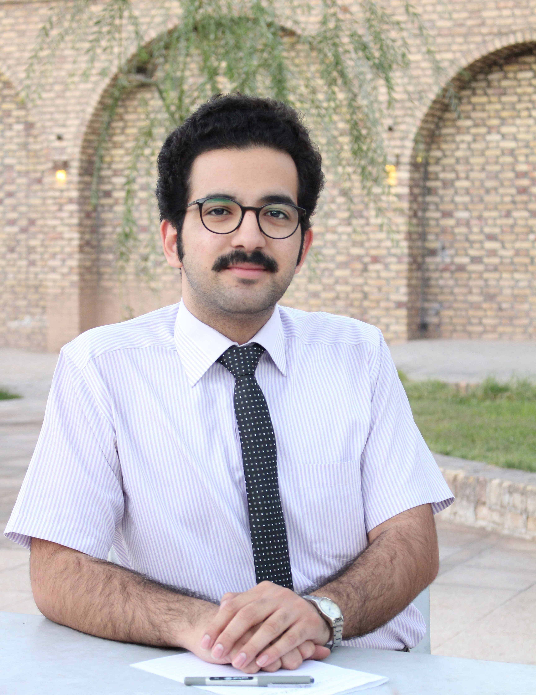

Mehrdad Lashkary
Research Assistant · Department of Economics, Allameh Tabataba'i University
I am currently a Research Assistant at the Department of Economics, Allameh Tabataba'i University in Tehran, Iran, where I work with [Supervisor Name] on [one line: what the project is about]. My work centres on time series econometrics and its application to macroeconomic and financial data.
My research interests are:
- Time series econometrics — volatility modelling, cointegration, and structural breaks
- Applied macroeconometrics — forecasting inflation and output in emerging economies
- Reproducible empirical workflows for applied economic research
Toolkit:
RLaTeXARIMA / SARIMAVAR & VECMCointegrationGARCHState-space models
- Research assistance, Department of Economics, ATU. Built and cleaned a quarterly macroeconomic panel, and estimated VECM and GARCH specifications in R for [project topic].
- [Second project or research group]. [What you did — the data, the method, the output. Name the estimator and the software.]
- Teaching assistance, [Institution]. Macroeconomics 1 and 2 and Quantitative Economics — problem sets, computational sessions, and office hours.
I am applying for pre-doctoral and PhD positions in economics starting [year], and I intend to continue in academic research.